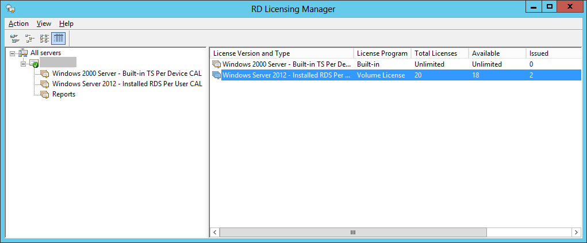

No remote Desktop Licence Server availible on RD Session Host server 2012 | JulianBen.com
A fully functional and activated 2012 Remote Desktop Session Host server displayed the following message:
This was a simple setup on one server with the: connection broker, Session Host and Licensing server with 2012 CAL’s installed.
Even though the licensing seems to be configured correctly, in server manager:
ServerManagerLicencingOK (image not restored from the original import)
and powershell:
Licensing diagnostics:
everywhere you look, everything seems to be OK. But the license manager shows something odd:
No licenses are being used? This server was used since late 2012. Some interesting things could also be found in the event logs, the following events appear:
EventID: 1130
Source: TerminalServices-RemoteConnectionManager
The Remote Desktop Session Host server does not have a Remote Desktop license server specified. To specify a license server for the Remote Desktop Session Host server, use the Remote Desktop Session Host Configuration tool.
and:
EventID: 1128
Source: TerminalServices-RemoteConnectionManager
The RD Licensing grace period has expired and the service has not registered with a license server with installed licenses. A RD Licensing server is required for continuous operation. A Remote Desktop Session Host server can operate without a license server for 120 days after initial start up.
The solution was to delete the REG_BINARY in
HKEY_LOCAL_MACHINESYSTEMCurrentControlSetControlTerminal ServerRCMGracePeriod
Only leaving the default.
regkey (image not restored from the original import)
Note: you must take ownership and give admin users full control to be able to delete this key.
After a reboot the server should be working again, licenses are now being used: 
Although everything seemed to be ok and configured correctly with valid licenses, it seems that the setup was still in a 180 day grace period, even though it was correctly configured.
A possible bug in RDS 2012?